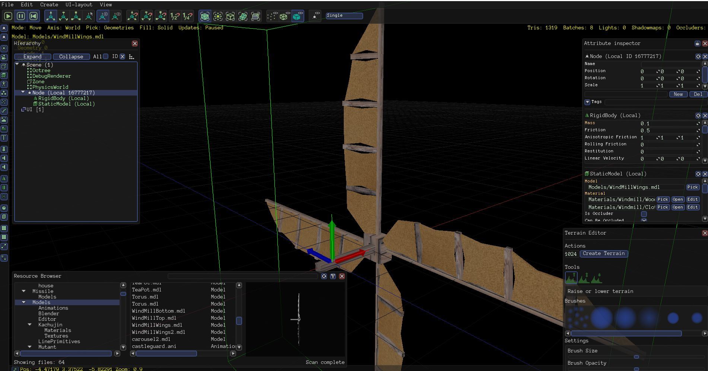
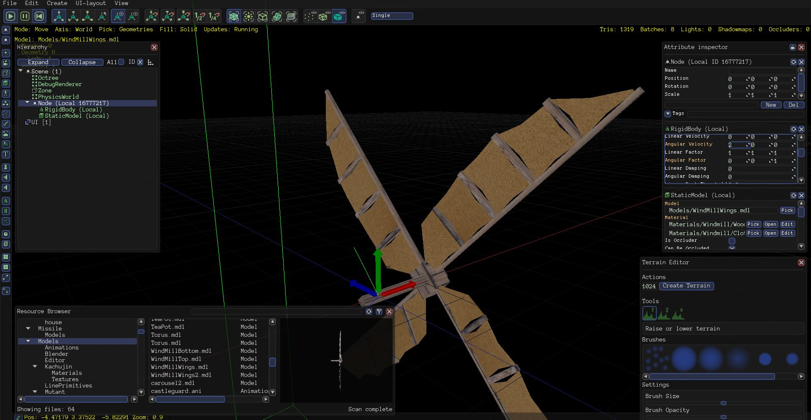
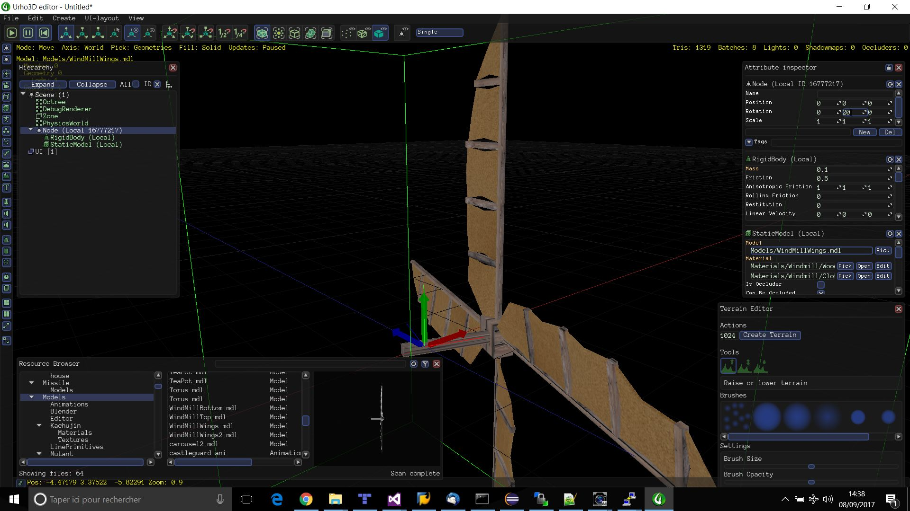
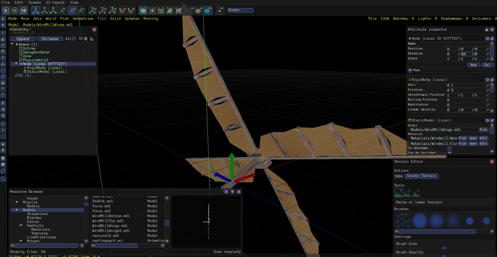

Hi
I’m trying to make a windmill wings model rotate on a axis, here’s the model when imported in the editor

I defined an angular velocity (2.0,0.0,0.0), it effectively make the wings rotate on the x axis (the wooden rod of the model)

However, I want to rotate the node on the y axis by 20.0, like this (I’m working on a 2D plateforming game and use 3D models for scenary) and have the wings rotate without the x axis changing so that the wooden rod stay parallel to the ground

But the rotation is making the wooden rod goes up and down
 :
:

I joined the scene and the model here
https://ufile.io/1et4m
I’m not sure if I could use a constraint or something